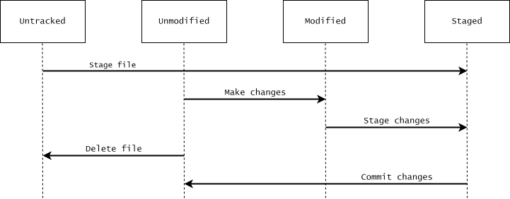

2 Getting started
In this chapter, we will configure some basic Git settings and introduce the essential Git commands for creating a repository, staging changes, and making commits. We will also explain how to ignore certain files and access Git’s documentation.
We assume that you are familiar with using Git Bash to work from the terminal. If you are not, start by reading Appendix A.
2.1 Basic configuration of Git
Before getting started, we need to configure a few basic Git settings using the git config command. Here, we will simply show which commands to use. For a more detailed explanation of Git configuration, see Appendix B.
Change the core editor
Git for Windows includes the Vim text editor, and Vim is the default text editor in a typical Git for Windows installation. Git uses Vim for writing commit messages and other text. Vim can be difficult to use if you are unfamiliar with it, so we recommend choosing a simpler text editor. The only thing we will explain about Vim is how to exit it if you open it by accident: press <Esc> to make sure you are in normal mode, type :q!, and press <Enter>. This quits Vim and discards any unsaved changes.
This tutorial is aimed at Windows users, so Notepad is a sensible choice of text editor. To configure Git to use Notepad, which comes pre-installed with Windows, run:
$ git config set --global core.editor notepad
This tells Git to use Notepad as a text editor in all your Git repositories. Git should be able to locate the Notepad executable. If not, specify its full path, which is typically C:/Windows/System32/notepad.exe:
$ git config set --global core.editor "C:/Windows/System32/notepad.exe"
Identify yourself
You should also configure your name and email address, which are recorded as the author information in your commits. You can specify this with the following commands:
$ git config set --global user.name "Your name" $ git config set --global user.email "your@email.com"
2.2 Initializing and cloning Git repositories
To start using Git, you can either initialize a new Git repository or clone an existing one.
Initialize a Git repository
To initialize a Git repository in a directory, use git init:
username@computer-id MINGW64 ~ $ mkdir ~/example-getting-started $ cd ~/example-getting-started username@computer-id MINGW64 ~/example-getting-started $ git init Initialized empty Git repository in C:/Users/username/example-getting-started/.git/ username@computer-id MINGW64 ~/example-getting-started (main) $ ls -A .git/
As shown in the output of git init, this creates a hidden subdirectory named .git, which contains the Git repository’s internal data. Notice that the terminal prompt now ends with (main). This is Git Bash telling us that we are in a Git repository and on the main branch. Depending on your Git installation, the name might be master instead of main. We will talk more about branches in Chapter 6.
Clone an existing Git repository
To clone an existing Git repository, use git clone. By default, git clone creates a new directory inside your current working directory and copies the repository into it. You can clone a repository from another directory on your computer, from a directory on a network drive, or from a URL. The source code for this tutorial is available on GitHub. For example, you can clone the repository into your home directory using the following commands:
$ cd ~ $ git clone "https://github.com/thomas-rasmussen/git-tutorial.git"
This creates a directory named git-tutorial containing a copy of the repository.
2.3 States of files
Before introducing the commands for staging and committing changes, we need to introduce some terminology for describing the different states of files.
Each file in the working tree is either tracked or untracked. Tracked files are files that Git knows about, meaning files that have previously been committed or added to the staging area. All other files are untracked.
Tracked files can be unmodified or modified, and their changes can be either staged or unstaged. When we modify a tracked file, Git can detect that its contents differ from those in the staging area. When we stage these changes, Git updates the staging area with the current contents of the file.
A file can also have both staged and unstaged changes if we modify it again after staging it. We will explore this distinction later in the tutorial.

2.4 Checking the state of files
The main command for checking the state of files is git status. If we run this command in the empty example-getting-started repository created earlier, we see the following output:
username@computer-id MINGW64 ~/example-getting-started (main) $ git status On branch main No commits yet nothing to commit (create/copy files and use "git add" to track)
There are no commits in the repository, and no files have been added to the staging area. Git also suggests creating files and using git add to track them.
2.5 Adding changes to the staging area
To add changes to the staging area, we use the git add command. The staging area represents the snapshot that will be recorded in the next commit, including the unchanged files from the previous commit. When we use git add, Git updates this snapshot to reflect the current contents of the specified files in the working tree. This can include adding new files, updating existing files, or recording the deletion of files. The staging area is also commonly called the index in Git’s documentation. Throughout this tutorial, we will generally use the term staging area.
Continuing our example, we first create a file in the working tree:
username@computer-id MINGW64 ~/example-getting-started (main) $ echo "Contents of file1.txt" > file1.txt
We now have an untracked file in our repository. If we run git status again, we see the following output:
$ git status On branch main No commits yet Untracked files: (use "git add..." to include in what will be committed) file1.txt nothing added to commit but untracked files present (use "git add" to track)
Now we add file1.txt to the staging area:
$ git add file1.txt warning: in the working copy of 'file1.txt', LF will be replaced by CRLF the next time Git touches it
We can stage multiple files at once. For example, git add file1.txt file2.txt stages two specified files. The command git add . stages changes to all relevant files in the current directory and its subdirectories, respecting Git’s ignore rules.
Depending on your Git configuration, you may see a warning about line endings when staging a file. This is related to differences in how Windows and other operating systems represent line endings in text files. The warning does not prevent us from staging the file, and we do not need to examine the details here.
The file file1.txt is now tracked, with its contents staged for the next commit. Let’s run git status again:
$ git status On branch main No commits yet Changes to be committed: (use "git rm --cached..." to unstage) new file: file1.txt
The output confirms that file1.txt is staged and will be included in the next commit. Git also suggests a command for removing the file from the staging area. We will discuss this command later in the tutorial.
2.6 Committing files to the repository
We have now seen how to add changes to the staging area using git add. To commit changes in the staging area to the repository, use git commit. This creates a new commit in the repository using the snapshot recorded in the staging area. Continuing our example:
username@computer-id MINGW64 ~/example-getting-started (main) $ git commit
After running the command, Git opens the configured text editor, where you can write a commit message. After writing the message, save the file and exit the editor. This is why we configured Git’s text editor earlier in the chapter.
You can also use the -m option to write a commit message directly:
$ git commit -m"Commit message"
After creating the commit, git commit displays output similar to the following:
[main (root-commit) b68a80a] Commit message 1 file changed, 1 insertion(+) create mode 100644 file1.txt
The output confirms that the commit was created and that it contains changes to file1.txt.
After committing file1.txt to the repository, file1.txt goes back to being unmodified, since the file now matches the version recorded in the latest commit. We can check this by running git status again:
$ git status On branch main nothing to commit, working tree clean
2.7 Viewing differences
We now have a commit in our example repository. Let’s make some additional changes to file1.txt:
username@computer-id MINGW64 ~/example-getting-started (main) $ echo "New changes" >> file1.txt $ git status On branch main Changes not staged for commit: (use "git add..." to update what will be committed) (use "git restore ..." to discard changes in working directory) modified: file1.txt no changes added to commit (use "git add" and/or "git commit -a")
As shown above, this changes the status of file1.txt from unmodified to modified. Git also informs us that we can discard the changes in the working tree using git restore. We will talk more about git restore in Chapter 5.
At this point, file1.txt is tracked, and we have modified the file in the working tree. We can use git diff to view changes in the working tree that have not yet been staged:
$ git diff diff --git a/file1.txt b/file1.txt --- a/file1.txt +++ b/file1.txt @@ -1 +1,2 @@ Contents of file1.txt +New changes
The line +New changes indicates that the content New changes has been added to the working-tree version of the file. We will explain how to use git diff in more detail in Chapter 4.
Let’s add the changes to the staging area and commit them:
$ git add file1.txt $ git commit -m"Add changes to file1.txt"
2.8 Viewing the commit log
We have now created two commits in our example. To view the repository’s commit history, we use git log:
username@computer-id MINGW64 ~/example-getting-started (main) commit 91860202c61448c4c72ca70709a6e843b51d6a0c (HEAD -> main) Author: Your Name <your@email.com> Date: <Date and time of commit> Add changes to file1.txt commit 5daad2bc8d1280cf7bf0d83ef2a7c676ff50028b Author: Your Name <your@email.com> Date: <Date and time of commit> Commit message
The output shows the author, date, and message of each commit. We will discuss git log in more detail in Chapter 3.
2.9 Ignoring files
A repository will often contain files that you do not want Git to track. For example, you might store supporting documents in your project directory without wanting to version-control them.
You can create a file named .gitignore in your repository to specify which files Git should ignore. Each line specifies an ignore pattern, except for empty lines and comments. For example, a .gitignore file might look like this:
# Lines starting with a "#" are comments. # Ignore project description project-description.pdf # Ignore all files ending in ".pdf" or ".docx" in "doc" subdirectory doc/*.pdf doc/*.docx # Ignore large dataset file in "data/" subdirectory. data/large-dataset.txt
Patterns in .gitignore do not cause Git to stop tracking files that are already tracked.
Although .gitignore files are important in real projects, we will not discuss them further in the main chapters of this tutorial. For more information about ignoring files when using Git, see Appendix C.
2.10 Accessing manual pages
We will end this chapter by explaining how to access Git’s documentation. There are several ways to access the manual pages. One is the git help command. For example, to open the manual page for git add, run:
$ git help add
The manual pages are available locally, so you can consult them even without an internet connection. You can also display a concise summary of a command’s options directly in the terminal using the -h option with a Git command. For example, run git add -h to display a summary of the options available for git add.
2.11 Summary
In this chapter, we have introduced the basic commands needed to start using Git. We have learned how to initialize or clone a repository, inspect the state of files, stage changes, and create commits. We have also introduced commands for viewing differences and commit history, explained how to ignore files, and shown how to access Git’s documentation.
The most important concept is the distinction between the working tree, staging area, and repository. Understanding how changes move between these components is fundamental to using Git.
2.12 Exercises
Exercise 1 - Create your first repository
In this exercise, you will practice creating a repository, staging and committing changes, and identifying the state of files at each step in the process.
1. Create a repository.
Create a directory named ex01-getting-started in your home directory, navigate into it, and initialize a Git repository.
2. Create a file.
Create a file named file1.txt in ex01-getting-started. The file should contain the string “Contents of file1.txt”. After creating the file, consider whether the file is unmodified, modified, or staged at this point. Use git status to check.
3. Stage the file.
Add file1.txt to the staging area. After adding it, consider the state of the file. Is it now tracked? If yes, is it unmodified, modified, or staged?
4. Commit changes.
Commit the staged file to the repository. In what state is file1.txt after the commit? Use git status to check.
5. Modify and commit the file again.
Make additional changes to file1.txt, stage them, and commit again. In each step, consider what state the file is in.
Exercise 2 - Learn to use Git documentation
Knowing how to consult Git’s documentation is useful when learning new commands or looking up options. In this exercise, you will consult the documentation to find an option that makes the output of git status more concise.
1. Set up a repository.
Create a directory named
ex02-getting-startedin your home directory, navigate to it, and initialize a repository.Create a file named
file1.txtwith the lineContents of file1.txt.Add the file to the staging area and make a commit.
Add changes to
file1.txt.Create a file named
file2.txtwith the lineContents of file2.txtand add it to the staging area.Create a file named
file3.txtwith the lineContents of file3.txt.
2. Display a shorter version of the git status output.
Running git status at this point produces the following output:
$ git status On branch main Changes to be committed: (use "git restore --staged..." to unstage) new file: file2.txt Changes not staged for commit: (use "git add ..." to update what will be committed) (use "git restore ..." to discard changes in working directory) modified: file1.txt Untracked files: (use "git add ..." to include in what will be committed) file3.txt
The output is rather verbose. Consult the documentation for git status to find an option that displays the status more concisely.
3. Further explore the documentation.
The output of git status -s from the previous step uses shorthand notation that might not be immediately clear. Consult the “OUTPUT” section of the manual page for git status to learn what the notation means.
Exercise 3 - Start using Git in an existing project (optional)
In this exercise, you will start using Git in one of your existing projects:
Navigate to the directory containing your project and initialize a Git repository.
Consider which files should be version-controlled and which should be ignored. If necessary, create a
.gitignorefile.Stage the files you want to version-control.
Use
git statusto check which files will be included in the commit.Commit the staged files.
Congratulations! You are now using Git to version-control your project. This is all it takes to get started.